Is Taking Cinnamon Every Day the Secret to Controlling Diabetes in Less Than 1 Month?
A Harvard Medical School report reveals the centuries-old secret of the country with the lowest diabetes rate in the world. And how it will send the numbers on your glucose meter plummeting in just a few weeks.
Take a look at this:
This is the inner bark of Cinnamomum verum.
The scientific name literally means “true cinnamon.”
We’re not talking about the same cinnamon that’s sitting in the little jar in your cabinet.
It’s not even the same species.
Cinnamomum verum grows in a narrow strip of land in southwestern Sri Lanka — and practically nowhere else on the planet.
For part of history, between the 16th and 18th centuries, it was so valuable that European powers fought bloody conflicts to monopolize its trade.
And for centuries, it was used in healing rituals by native peoples and regarded as a super remedy in natural medicine.
But to many Western scientists, all this talk about cinnamon controlling blood sugar was nonsense...
Until a chemist from the United States Department of Agriculture published a report that changed everything.
Let me explain.
It All Started With an Apple Pie…
Dr. Richard Anderson was a lead researcher at the United States Department of Agriculture, at the Beltsville research center in Maryland.
His job was to test various common foods and measure what each one did to blood sugar.
One of them was apple pie.
Now think about this with me…
Apple pie is sugar, white flour, and fat.
Anderson expected it to worsen glucose markers, obviously.
But when the results came back…
It was the opposite.
The apple pie improved insulin function more than any other food in the entire series of tests.
So he was confused and repeated the test.
Same result.
And this is where it gets interesting.
When Anderson Analyzed the Pie Ingredient by Ingredient, He Finally Found the Secret…
So he began separating the ingredients one by one.
Flour. Sugar. Butter. Apple.
The first obvious hypothesis was the apple.
It would make sense.
So they tested the apple by itself.
But it wasn’t the apple.
“Then it must be something in the crust,” they thought.
It wasn’t the crust either.
And here’s the part that made the LEAST sense:
The pie had more added sugar than practically any other food they tested…
And yet it produced the best insulin response.
A food with more sugar. With a better glycemic response.
They tested the fat. That wasn’t it.
They tested the egg. That wasn’t it.
One by one, the ingredients were eliminated.
Until exactly one remained.
The only one nobody would suspect, because it was there just for the aroma, simply as a finishing touch.
That little spoonful we sprinkle on top of the pie and don’t even count as an ingredient:
Cinnamon
What Was Inside the Cinnamon Changed Everything…
So Anderson and his team went back to the lab and isolated the compound in cinnamon that was doing it.
Its name is MHCP (methylhydroxychalcone polymer).
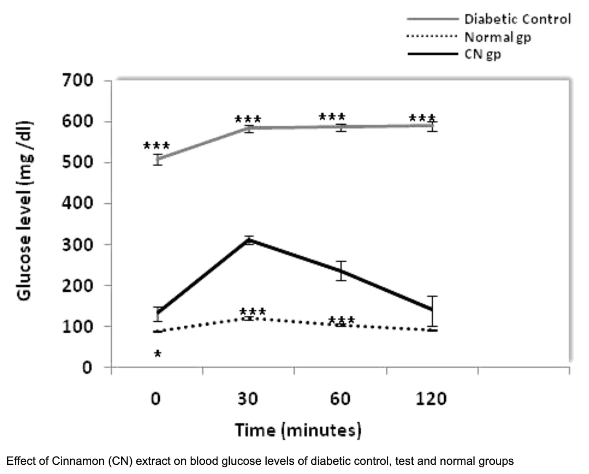
You don’t need to memorize that name, but what this compound does is the reason you’re reading this today.
Here’s what almost nobody explains properly:
Your body is probably still producing insulin.
The problem is that your cells have stopped listening to insulin.
This is called: Insulin Resistance
And that’s why your blood sugar stays high no matter how “carefully” you eat.
Here’s how it works:
Insulin is the key.
The cell is the door.
Glucose is what needs to get inside.
With insulin resistance, the key tries to turn, but the door is stuck because the lock has rusted.
The door doesn’t open and glucose doesn’t get into the cell.
So it stays circulating through your bloodstream, your kidneys, your nerves, your eyes…
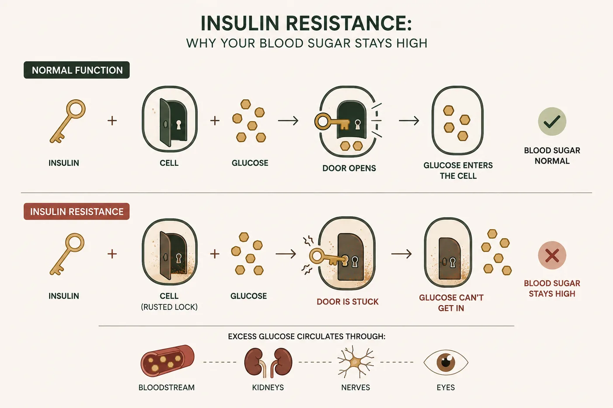
Because it isn’t entering your cells as efficiently as it should.
That’s why simply thinking:
“My blood sugar is high because I’m eating too much sugar”
Is partially wrong.
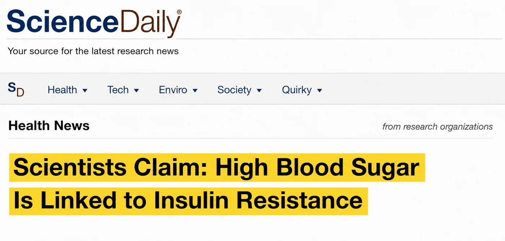
Of course diet matters. But it isn’t the main point.
There’s another question:
Are your cells still responding properly to insulin?
Because if the answer is “no”…
You can spend all day trying to control what goes into your mouth…
While ignoring what’s happening inside your cells.
Now understand what Anderson discovered:
MHCP does exactly what insulin is supposed to do, but can no longer do on its own.
It helps the cells “open the door” again so glucose can get inside.
Anderson called it the most significant scientific discovery he had seen in 25 years of his career.
You’ve Been Misled About Cinnamon This Entire Time…
And maybe some people are thinking: “Okay, I’ve already used cinnamon, but I still have high numbers on my meter.”
For starters, cinnamon can be found in many cabinets across the country.
It’s in cakes, coffee, cereal, desserts…
You probably have a little jar at home, right?
However, most of the cinnamon sold in the United States is not the same kind Dr. Anderson studied.
And I’m going to give you the answer the supplement industry doesn’t like to give.
If you’ve ever bought a bottle of cinnamon capsules at the drugstore…
If you’ve ever put cinnamon powder in your coffee every day for three months hoping the number would go down…
And nothing happened…
You didn’t fail.
You took the wrong plant.
95% of “Cinnamon” Supplements Are Scam…
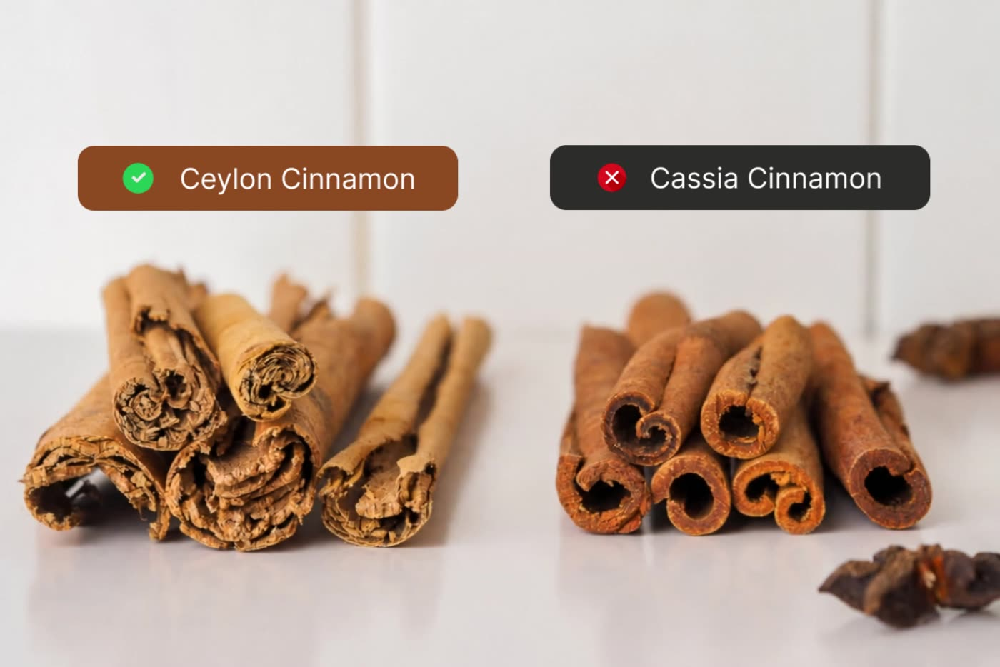
If you’ve tried cinnamon before and it did nothing for your blood sugar, you probably took Cassia.
It’s a cheaper bark from China.
Ceylon, which is Cinnamomum verum. The scientific name that literally means “true cinnamon” — only grows in a narrow strip of land in southwestern Sri Lanka.
There, it is harvested by hand.
Ceylon bark is harvested by hand from the thin inner layer of the trunk and rolled into extremely fine layers — you can count ten or more paper-thin sheets inside a single Ceylon stick.
Cassia, on the other hand, is a single thick bark that curls in on itself. Industrial harvesting, at scale, cheap.
That’s why Ceylon costs much more.
And that’s exactly why the supplement industry uses Cassia.
And most brands sell it as if it were cinnamon.
Legally, they can.
Because the word “cinnamon” on the label does not require anyone to tell you which species is inside.
Cassia and Ceylon are different plants.
Similar genera, distinct species, compositions that have nothing to do with each other.
It’s the difference between a horse and a zebra.
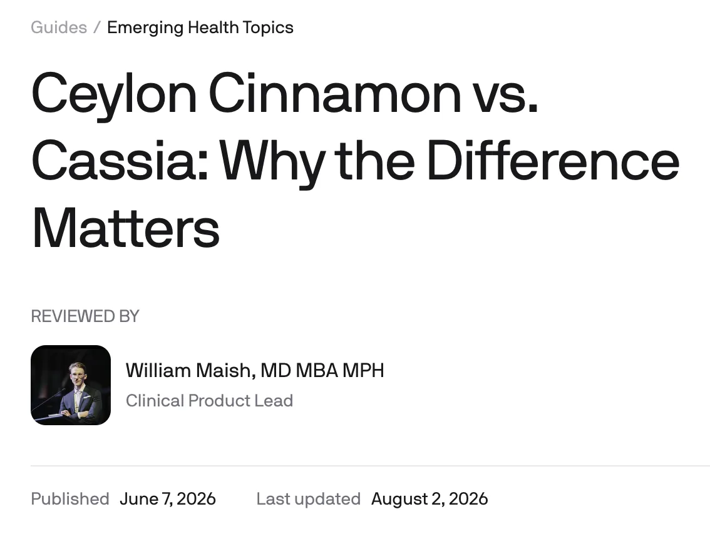
A Mistake That Cost American Healthcare Centuries
This wasn’t a recent accident.
It was a commercial decision made centuries ago.
Ceylon cinnamon was once one of the most expensive spices in the world.
The Portuguese, Dutch, and British fought wars to control its trade.
It was difficult to grow. Difficult to harvest. Difficult to transport.
So the market found a solution.
They found a similar bark, thicker, tougher, much cheaper — Cassia, from China and Indonesia.
It had a similar smell.
A stronger, harsher flavor, but close enough.
And it cost a fraction of the price.
So it was given the same name.
And sold on the same shelf.
Today, the overwhelming majority of “cinnamon” sold around the world is Cassia.
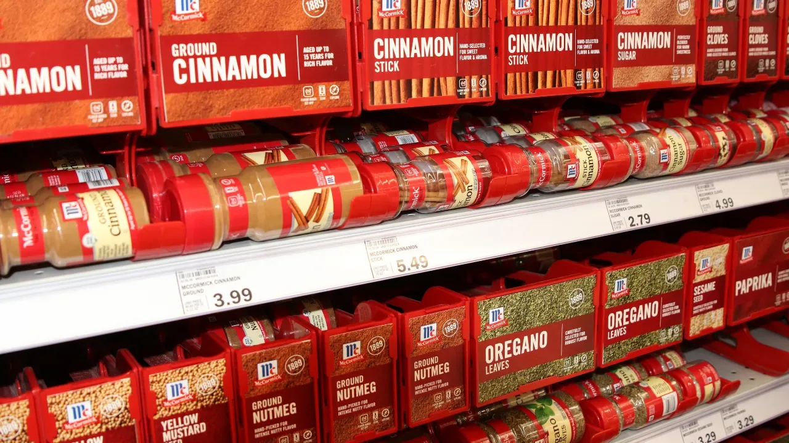
The product that became famous for the benefits of Ceylon…
Is sold as if it were the same thing.
While real Ceylon continues leaving Sri Lanka in limited quantities, for those who actually know what they’re looking for.
And Cassia Isn’t Just Ineffective. It Carries a Risk.
Cassia contains a substance called coumarin.
The FDA itself measured the levels.
Cassia cinnamon contains, on average, around 3,000 mg of coumarin per kilogram.
And why does that matter?
Because coumarin, when used daily and continuously, is associated with liver stress and liver damage.
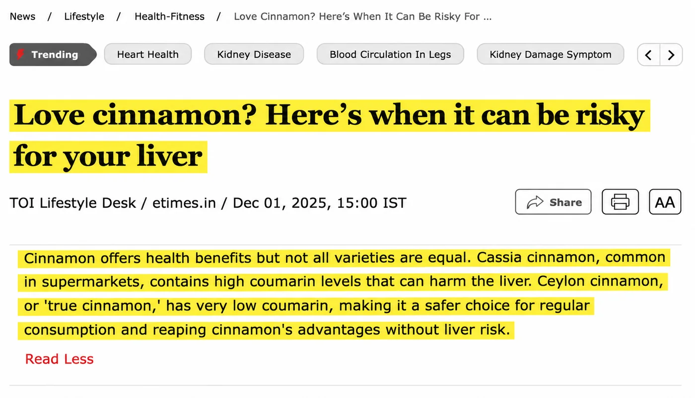
The FDA established a tolerable daily intake limit of 0.1 mg of coumarin per kilogram of body weight.
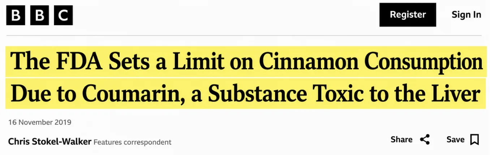
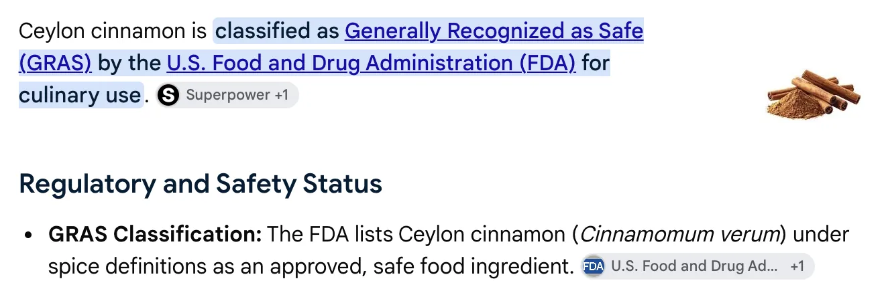
For a 132-pound adult, that’s 6 mg per day. For a lifetime.
One teaspoon of Cassia alone can exceed that.
And that’s why the FDA explicitly recommends that people who consume cinnamon frequently use Ceylon.
Now stop and think about what that means for you:
If you’re someone with blood sugar problems, taking the wrong cinnamon every single day, for years…
You’re putting yourself in serious danger.
You did everything thinking you were taking care of your health.
And you bought the wrong bottle.
And There’s a Second Problem, Which Is Dosage
Let’s say you managed to get real Ceylon.
Powdered. In the cabinet. A spoonful in your coffee.
Even then, it would hardly solve the problem.
Because the concentrations of active compounds studied don’t appear in a pinch of seasoning.
The natives of Sri Lanka don’t use just a pinch, they consume this cinnamon from childhood. It is present in all of their meals throughout the day, for years and decades.
That is exactly why this region records the lowest diabetes rates in the world.
So, to get the same benefit that the people of Sri Lanka naturally have, you would need:
- 1. The right species — DNA-verified Ceylon. In its purest possible form.
- 2. An extremely potent concentration — equivalent to thousands of milligrams of raw bark. Something no current supplement or store-bought jar delivers.
Having one without the other doesn’t work.
And that’s where practically every product on the market fails on at least one of those two fronts.
That’s why we decided to solve both.
Introducing the Breakthrough Solution for Blood Sugar
After months of work, together with Dr. Richard Anderson’s own team and in partnership with NLabs, one of the most respected laboratories in the U.S. and the world…
We created Cinna Shield®.
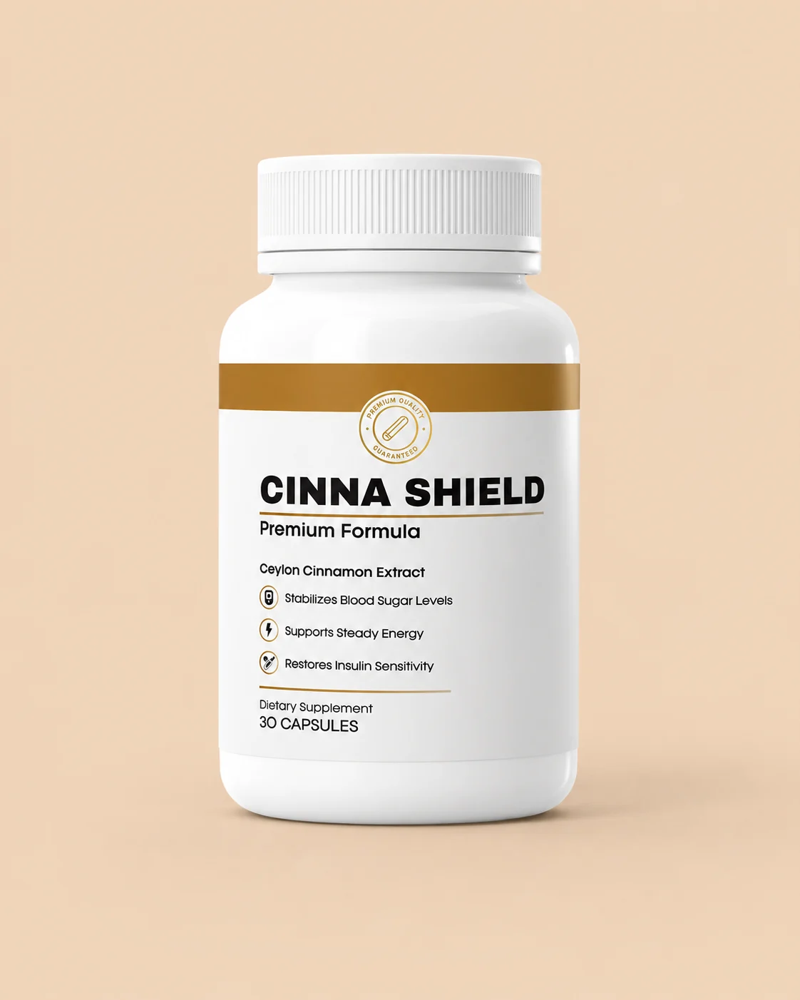
Real Ceylon that comes directly from the bark of trees in Sri Lanka.
A completely different species from Cassia.
Cinna Shield® uses DNA-verified Ceylon in a concentrated 12:1 extract.
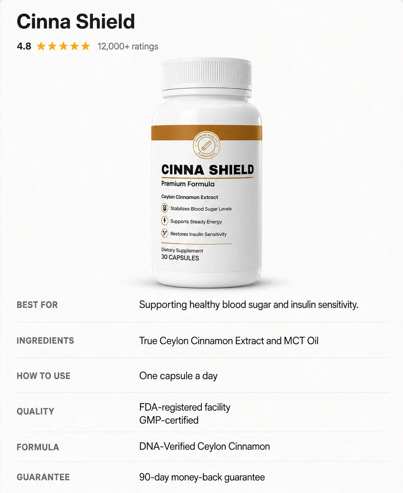
A single capsule delivers the equivalent of 7,200 mg of raw bark.
Let me translate those two numbers for you, because they are the entire product.
“DNA-Verified” Means the Plant Was Tested, Not Just Purchased
DNA testing identifies the botanical species of the raw material.
Not the smell. Not the color.
The species.
It’s the only way to guarantee that what went into the capsule is Cinnamomum verum, and not the cheap Chinese bark the industry sells under the same name.
“12:1” Means 12 Kilograms of Bark Are Used to Make 1 Kilogram of Extract
That’s why one capsule delivers the equivalent of 7,200 mg of raw bark.
You couldn’t eat that.
Not as powder, not in coffee, not sprinkled over fruit.
Not every day.
And that’s the distance between “using cinnamon as a seasoning” and “using cinnamon as a defense and control strategy for diabetes.”
That’s the difference that will show up on your meter.
★★★★★
Real Stories, Real Results
Honest experiences with Cinna Shield® Ceylon Cinnamon
5.0★★★★★
Finally Back in Control!
For years my blood sugar was all over the place and every reading stressed me out. I felt like no matter how clean I ate or how hard I tried, my numbers never stayed consistent. Since starting Cinna Shield, everything feels steadier and those afternoon crashes don’t control me anymore. My energy lasts through the day and I’m not constantly reaching for caffeine or sugar. For the first time in a long time, I feel like I’m back in charge of my health.
5.0★★★★★
Mornings Finally Feel Clear
I used to start every morning tired, foggy, and already worrying about what my numbers would look like. I tried every so-called ‘healthy fix’ but nothing really moved the needle. With Cinna Shield, my mornings feel clear, my cravings are under control, and my energy is steady throughout the day. I’m not dealing with those late-night sugar crashes anymore and I finally feel balanced. It feels good knowing I’ve found something simple that actually works.
5.0★★★★★
My Doctor Asked What I Changed!
I was skeptical about another cinnamon supplement because I’d tried so many that did nothing. But my neighbor insisted this Ceylon one was different because it’s concentrated instead of powder. After 8 weeks, my doctor noticed my numbers were more stable and asked what I’d changed. I told him about the Ceylon cinnamon and he said whatever I’m doing, keep it up. No stomach issues like the other brands gave me either.
4.9★★★★★
Wish I’d Known About Ceylon vs Cassia Years Ago!
My husband had been taking cinnamon capsules from the drugstore for blood sugar support, but they weren’t doing much and sometimes caused heartburn. I researched and learned most store brands use Cassia cinnamon, which can stress your liver. Cinna Shield uses real Ceylon cinnamon. Within a month, his energy was steadier and his morning readings improved from the 140s to consistent 120s. The capsules are much easier on his stomach too.
5.0★★★★★
Quality You Can Actually Feel Working!
As a retired nurse, I’m very particular about supplements. Most are cheap fillers with barely any active ingredients. Cinna Shield Ceylon Cinnamon is clearly premium — you can tell by the 12-to-1 concentration from authentic Sri Lankan Ceylon bark. I’ve been taking it for 3 months and my energy levels are the most stable they’ve been in years. No more 2 PM sugar cravings, no digestive upset, and my labs showed improvements. Worth every penny.
5.0★★★★★
The First Thing That Works
I’ve thrown away so much money on powders, gummies, and sugar support blends that made big promises but never delivered. Nothing ever stuck and I just kept feeling more frustrated. Cinna Shield was different from the start — one capsule a day actually gave me the steady energy I’d been missing for years. My focus is sharper, I don’t hit the wall in the afternoons, and I finally feel consistent. It’s the first product I can honestly say has changed my daily routine.
Individual results may vary*
What Happens When Cinna Shield® Enters Your Life...
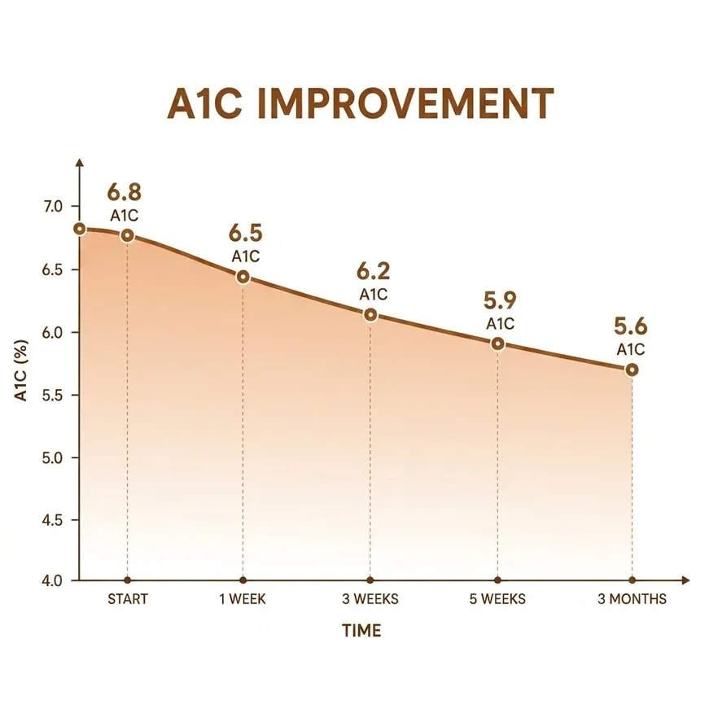
- The brain fog disappears.
- Sugar cravings decrease.
- Your body stops asking for sugar.
You feel that something has changed.
- Your meter shows a number you haven’t seen in years.
- Your energy comes back.
- Your mood improves.
You start believing again.
- Your post-meal blood sugar stabilizes.
- That sleepiness after lunch? Gone.
- Your body is finally using glucose the way it should.
The door that was stuck has started to open.
- You don’t recognize the tired person in the mirror.
- Your sleep is deeper.
- Your skin improves.
Your doctor will ask what you did.
- You no longer calculate carbs.
- You no longer run away from food.
- And you no longer live in fear of eating.
The anxiety is gone.
- Diabetes is no longer the center of your life.
- You wake up without fear.
- Eat without guilt.
- Plan for the future without the shadow of the disease.
You’re living again.
Why Most People Fail (And How You Won’t)
Most people who begin treatment with Cinna Shield® quit in week 3.
Why?
Because the body starts responding quickly — and they think they’re already cured.
Or because the deeper result takes a little longer — and they think it’s not going to work.
Both are wrong.
The first signs come in the first few days.
But the real transformation — the one where you trust your body again, where diabetes stops feeling like a sentence, where you look in the mirror and see a new person...
That takes months.
Not because the formula is slow.
Because cellular damage does not reverse in weeks. That’s biology.
And no product on the planet can change that.
Is Cinna Shield® Made for You?
So before you make the decision to begin treatment with Cinna Shield®, you first need to know whether this is for you. I’d rather tell you the truth than sell you an illusion.
- For those who have already tried everything. Metformin, injections, diets, exercise, grocery-store cinnamon or internet scams, cheap supplements. Nothing worked. You’re not the exception — you’re the rule. But that changes now.
- For those who still have hope. If you’ve already given up on getting better, this text isn’t for you. But if there’s still a thread of hope that your body can respond... you’re in the right place.
- For those who want to stop depending on medication. Medications control. They don’t cure. You don’t want another crutch. You want to get out of the pharmacy.
- For those who want to stop living in fear. Fear of eating. Fear of the meter. Fear of the next appointment. Fear of complications. That fear can end.
- Not for people who want results in one week. Insulin resistance didn’t form in days. It won’t disappear in days. If you don’t have the patience for 8 to 16 weeks of treatment, don’t buy — you’ll quit before the results appear.
- Not for people who have never investigated the cause. If you’ve never had tests done, never spoken with a doctor, never understood what’s happening inside your body... start there. Even if you don’t buy anything.
- Not for people looking for the cheapest option. If price is the only factor, buy generic metformin. It’ll cost less.
The True Cost of Not Solving This…
Let’s be honest here, because I know you’ve already spent a lot of money.
I’m not talking only about the price of Cinna Shield®.
I’m talking about the cost of continuing exactly as you are.
Let’s do the math:
- The Metformin you take every day may be cheap, but you know it only treats the symptom, not the cause. And you’ve already felt the side effects: diarrhea, nausea, fatigue, that constant discomfort that follows you throughout the entire day.
- Injectable medications like Ozempic, Mounjaro, or Trulicity can cost $800 to $2,500 per month — depending on your coverage — and come with a frightening list of side effects: severe nausea, vomiting, abdominal pain, risk of pancreatitis, and even suicidal thoughts in some cases.
- Appointments with endocrinologists who charge $200 to $400 per visit, and you walk out with the same prescription as always, except the dosage has been increased.
- The “miracle” supplements you bought at the drugstore or online: cinnamon powder, chromium, berberine — $50 here, $80 there, $120 somewhere else. And none of them did what they promised.
- The restrictive diet you try to follow, but that leaves you hungry, irritated, and frustrated, spending a fortune on “functional” foods that never solve the resistance inside your cells.
And worst of all: the cost that doesn’t show up on your credit card statement.
The problem was never the price of the medication.
The problem is that it never ends.
There is no final blister pack. There is no month when you buy it and you’re cured.
Imagine 10, 20, 30 years from now... still opening the same blister pack. Still pricking your finger every day. Still avoiding sweets. Still afraid.
Add up what you’ve already spent on appointments, tests, medications, supplements that didn’t work.
Then calculate how many years are still ahead.
That’s living like a hostage.
And worse: diabetes doesn’t stay the same. It gets worse.
If you do nothing now, 6 months from now your blood sugar will be higher. Your body will be more inflamed.
Doing nothing isn’t free.
You pay every day — with the energy you don’t have, with the fear that grows, with the number on the meter that refuses to go down no matter what you do…
You’ve Already Spent Too Much Money on Solutions That Don’t Treat the Cause…
Here’s the truth nobody told you:
Metformin and other medications do not reverse insulin resistance. They simply force your body to produce more insulin or make your liver produce less glucose.
That doesn’t solve the real problem: your cells have stopped listening to insulin.
It’s like trying to open a door with a rusty key — and instead of fixing the lock, you simply buy more keys and keep trying to turn harder.
But none of them fix the lock.
Cinna Shield®, with its MHCP, actually fixes the lock.
It helps your cells reopen the door so glucose can enter naturally.
Without forcing. Without overloading your pancreas. Without the devastating side effects of medications.
The Decision My Team Hated…
So I know you’ve already spent a lot of money.
Appointments, tests, medications, supplements, diets, apps, meters...
Altogether, you’ve already spent thousands.
And you’re still here. Reading. Looking for a real solution.
That’s why I did something my team hated.
I could charge a lot per bottle.
Many people would pay. Because it works.
But I don’t want to create another barrier for people who have already lost too much time and money.
That’s why today you can get access to Cinna Shield® with 70% off the complete 6-month package.
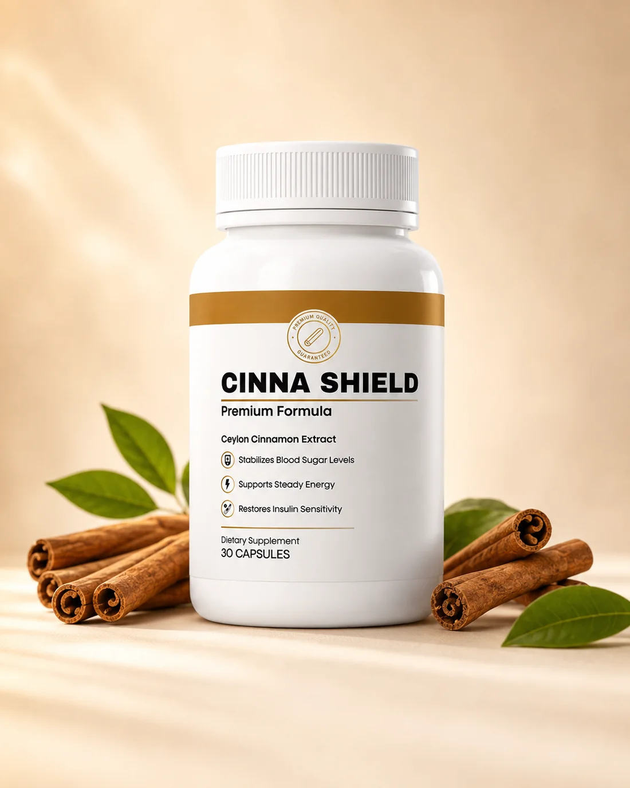
How It Works…
First, you answer 5 quick questions to calculate your Insulin Resistance Index.
I need to know your age, how long this has been happening, what your blood sugar looks like now, and what you’ve already tried.
At the end, you’ll find out whether Cinna Shield® is compatible with your body. And if it is, your price and complete package will appear in the results.
Don’t wait. Click the button and check your index before this batch sells out.
Check My Insulin Resistance Index →It’s the price of living again without fear of food. Without fear of the meter. Without fear of the future.
You Have Nothing to Lose…
I know you’ve been misled before. So I’m going to remove all the risk for you.
Try Cinna Shield® for 90 full days. Use the bottles.
Watch for the first signs:
- Your blood sugar beginning to stabilize.
- Your energy returning throughout the day.
- That post-meal sleepiness decreasing.
- Your meter showing numbers you haven’t seen in years.
If, after 90 days of consistent use, your blood sugar does not improve, if you don’t feel that your body is finally responding, or if for any reason you are not 100% satisfied, send my team an email and ask for your money back.
Empty bottles. No questions. No hassle. Nobody is going to tell you that you “did something wrong.”
If you don’t get the result you’re looking for, or you believe there is a better solution on the market for your condition, the customer support team will refund 100% of your purchase price.
This isn’t a fake guarantee. This isn’t a marketing trick.
This is confidence in the revolutionary solution we developed.
You keep the result or you keep the money.
The only thing you cannot do is stay exactly where you are.
Six Months From Now, You’ll Be Living One of Two Stories
Another appointment. Another test. Another medication. Another diet that didn’t work.
But here’s the part you need to feel: Diabetes doesn’t stand still.
It doesn’t wait for you to decide.
Every month that passes, the resistance increases. Inflammation advances. Complications get closer.
Path 1 isn’t your blood sugar staying where it is. Path 1 is you six months from now, with worse numbers, more fear, more restrictions, more guilt.
It’s looking in the mirror and seeing someone 10 years older — and slowly starting to accept that this is just how it is.
Six months from now, it’s an ordinary morning.
You wake up, walk into the kitchen, have your coffee — without calculating carbs, without fear.
You look at the meter and see numbers you haven’t seen in years.
You no longer live your life around diabetes.
You eat a piece of fruit without guilt. You go out with friends without anxiety. You plan for the future without the shadow of the disease.
You go to the doctor and he says: “What did you do? Your numbers look excellent.”
And you smile. Because you know it wasn’t luck. It was a decision.
Now you know the truth.
You know why everything you tried until today didn’t work.
Answer the 5 questions. Your result appears in less than 1 minute.
A new life is waiting for you on the next click.
Check My Insulin Resistance Index →
Comments
Wilma Becker
Has anyone tried this yet?
Like · Reply · 4 · 39 min
Maria Schmidt
This is the best thing I’ve ever used for my blood sugar. My morning readings finally dropped!
Like · Reply · 7 · 16 min
Samantha Logan
I bought mine for the full price and now it’s 70% off? That’s not fair!
Like · Reply · 4 · 51 min
Monica Smith
How long does the shipping take?
Like · Reply · 4 · 1 h
Wilma Becker
Hey Monica, I received mine after a week.
Like · Reply · 7 · 24 min
Paula Rowen
I just ordered mine! I can’t wait
Like · Reply · 4 · 2 h
Hanna Lang
Omg SAME! I saw it was back in stock and ordered immediately. Didn’t want to miss out again.
Like · Reply · 7 · 1 h
Emma Schulz
Hey Christina, THIS is what you need instead of another useless drugstore cinnamon.
Like · Reply · 2 · 3 h
Christina
That’s wild! I just ordered three, one for my mom too.
Like · Reply · 7 · 2 h